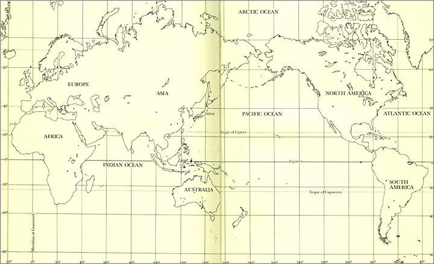
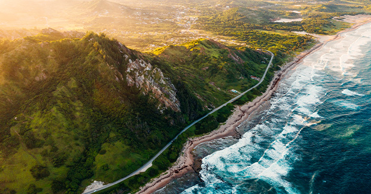
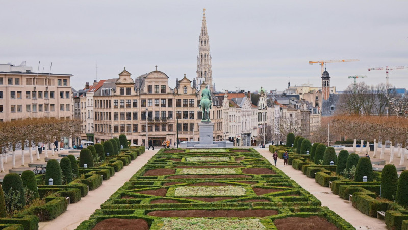
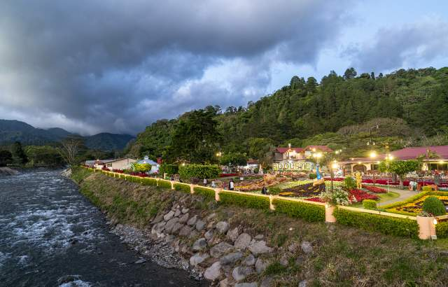
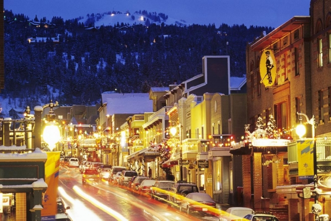
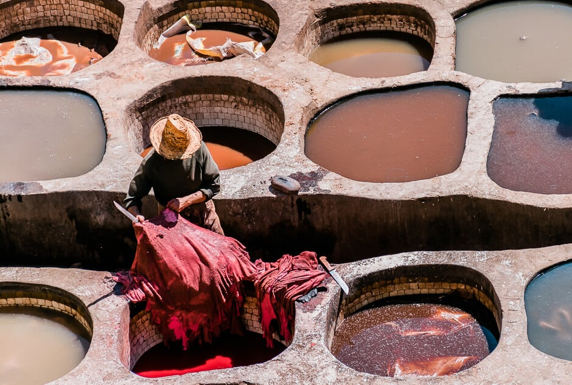
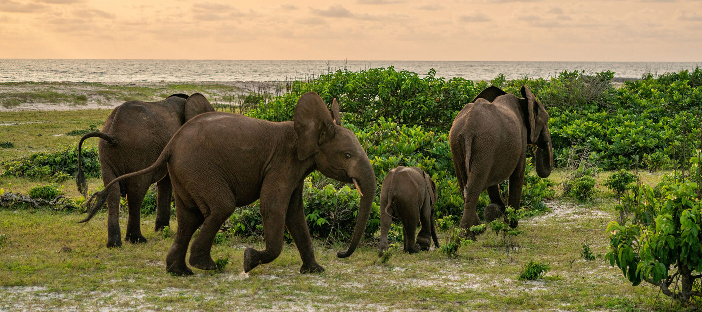
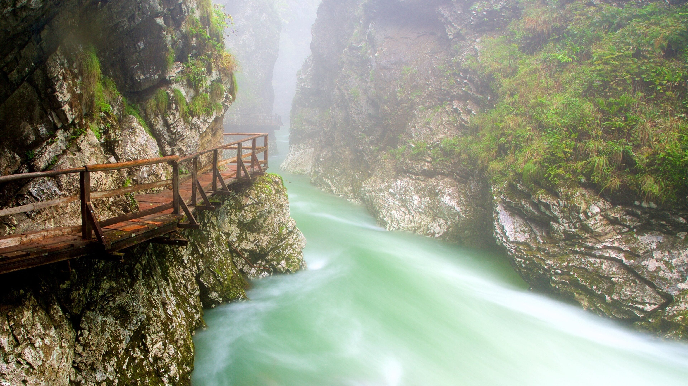
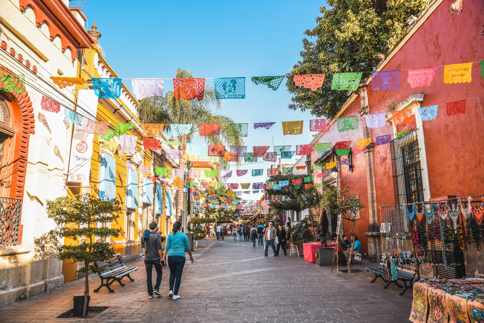

The Best Places to Travel to in 2026

BY ARATI MENON AND MEGAN SPURRELL
December 17, 2026
Crafting a list of the best places to go in the world, in any given year, is a reminder of travel’s most beautiful paradox: that our planet can feel both intimately small and incredibly vast at the same time. Brimming with more wonders than you can fit into one lifetime—yet increasingly connected—the places to travel to in the world are endless. Which is exactly what makes curating this list not only a great joy but also a challenge.
Our Best Places to Go in 2026 are underpinned with that very sense of magnitude. There are places that already feel familiar and yet are being imbued with fresh life, like Hong Kong, which has an exciting new cultural center of gravity, and the 16th-century lake city of Udaipur, where a flurry of luxury-hotel openings is ushering in a new era. There are also under-the-radar gems that are stepping into the spotlight, like Canada’s Prince Edward County, where a wave of indie wineries, new restaurants, and boutique hotels is redefining the coastal escape, and Fès, Marrakech’s understated sibling, which is set to shine with the historic reopening of its medina following a remarkable 15-year restoration.
Candidly, even after 12 years of pinning down the destinations we're most excited about for this annual list, we’re just as wide-eyed as you when we stumble onto something totally unexpected. In Bolivia, great expanses of shimmering salt pans have long been a draw, but zoom out on the region of Potosí and you'll find a geological bonanza of lagoons, hot springs, and snowcapped volcanoes. And if Rwanda’s primates have captured your imagination, what about Gabon, where new eco-lodges are opening up access to untouched forests that are home to western lowland gorillas and sweeping savannas? But perhaps few places on earth evoke life’s vastness quite like Uluru, the massive sandstone monolith that rises from the heart of the Australian Outback. As the region marks the 40th anniversary of a historic hand-back program, a new chapter of purpose-driven tourism is evolving. In 2026, visitors, guided by Aṉangu storytellers, can journey along a 33-mile trail, then spend the night in luxurious glamping camps, where the desert sky unfurls like an ancient manuscript—perfect for reflecting on our place in the ever-unfolding story of the universe.
This list is for travelers and dreamers alike. Use it—along with the companion lists for six continents—to jump-start your travel plans or simply indulge your sense of wonder. In the year ahead, our global team of editors will be exploring many of these places, and we can’t wait to share the stories we discover on the ground and, perhaps, even cross paths with some of you along the way. —Arati Menon

Arusha, Tanzania
Go for: a beloved icon’s opening in the city, and a new camp’s take on safari in the forest
Sitting at the edge of a vast swath of jungle, the city of Arusha is embracing its surrounding nature with a slate of new forest hotels and a primatology center dedicated to the late Dr. Jane Goodall.
Entara’s Koroi Forest Camp
Rumors of the late primatologist Jane Goodall’s new museum in the city of Arusha have circulated for months—and now, finally, they’re confirmed. Dr. Jane's Dream: The Goodall Centre for Hope will open in late October 2026, next to the centrally located Arusha Cultural Heritage Center. Created by a team of designers who include an alumnus of Disney’s Animal Kingdom, the space will consist of six interactive exhibit areas—including a theater and a Garden of Commitment—focusing on conservation education for future generations.
While the city received media attention recently in light of 2025 election demonstrations, Arusha is abuzz with other goings-on, too, courtesy of local entrepreneurs, from Afro-minimalist Makao Collective, which curates gorgeous handcrafted furniture and home decor, to Opuk Lounge, which makes delicious boxed-picnic lunches for conservation-focused safari outings with The Wild Source. Sports enthusiasts, take note: The 30,000-seat Samia Suluhu Hassan soccer stadium in Arusha’s Olomoti region will open in the summer of 2026, primed to host the 2027 Africa Cup of Nations final.
Looking beyond the city, the much-anticipated Koroi Forest Camp from Entara, a community-focused operator, opened this summer in Arusha National Park. This eight-chalet property in the Momella Forest, on the lower slopes of Mount Meru, gives a distinct alternative to the classic game viewing of Tanzania’s plains; instead, here, you might see elephants, shy duikers, and the black-and-white colobus monkeys that give the camp its name. Another newcomer to the safari scene is the Laba Mama Simba, which opened this spring in the 1,730-acre North Dolly wildlife estate. —Samantha Falewée

East Coast, Barbados
Go for: a new (unspoiled) slice of island life—and more access than ever
With new direct flight routes and luxe cruise itineraries, the Caribbean’s easternmost island is becoming more accessible than ever in 2026. Delta and KLM recently launched nonstop routes from their hubs in Atlanta and Amsterdam, respectively, and the port of Bridgetown completed a $2 million upgrade in 2023. The island is also developing the port of Speightstown on the north end of the island, which now offers new moorings for smaller luxury vessels like the Emerald Sakara, from Emerald Cruises, which docks here on a number of itineraries during its 2026 winter season.
All of this will invariably mean more visitors. But that doesn’t mean you can’t easily escape the crowds should you choose. While Barbados’s most popular luxury resorts lie along the tranquil western shores on the Caribbean Sea, adventure-minded travelers can drive just a half hour northeast from Grantley Adams International Airport or the busy Bridgetown cruise ports to reach the island’s more rugged Atlantic coastline, where dramatic scenery, world-class surfing, and colorful fishing villages preserve the island’s unspoiled character. Start in Bathsheba, where powerful waves have long drawn surfers to the Soup Bowl, a reef break revered by international pros. There’s plenty of outdoor activities for nonsurfers too, with a national park and wildlife reserve protecting the majority of the east coast from commercial development. Hike from Bath Beach to Bathsheba on a scenic six-mile path that follows the former route of the island's coastal railway. Then round out the day in the nearby village of Martin's Bay on Thursdays, when the Bay Tavern Fish Fry brings together neighbors and visitors alike for fresh-off-the-boat red snapper, baked mac and cheese, and rum-fueled karaoke sessions.
In the past, the majority of east-coast accommodations have consisted of family-owned inns and seaside cottages. This September hotelier Paul Doyle, who owns the island’s oldest operating hotel, The Crane Resort, finished the three-year construction on a new all-villa property called East Resort—bringing upscale yet intimate lodging to what they call Barbados’s best-kept secret. —Mariette Williams

Brussels, Belgium
Go for: creative inspiration and cultural revival
This often-overlooked European capital is having a cultural moment, signaling a shift from a bureaucratic hub to a creative powerhouse. The opening of Kanal—Centre Pompidou in November 2026 transforms a long-dormant factory into a contemporary center for modern arts. One of Europe’s highly anticipated arrivals, it will feature expansive exhibition spaces curated with Paris’s Centre Pompidou, alongside a dynamic program of live performances, music, film, workshops, a library, and—five floors up—a restaurant overlooking the vast showroom, capped by a rooftop bar with panoramic city views. Just steps away is newly opened The Standard, with a rooftop bar, greenhouse-style lounge, and bold design that mirrors the city’s creative energy.
Brussels’ cultural revival is visible everywhere, from the refreshed façades of Place de la Bourse to the Dome Project, a restoration of Belgium’s first department store with modern flair. Nearby, the Gare Maritime, a former freight station, seamlessly blends sustainable architecture with design fairs and chef-led food stalls. Plan a spring visit, when Art Brussels draws galleries and collectors from around the world for a vibrant international fair, and the biannual Zinneke Parade transforms the city’s streets into a stage of theatre and imagination. For those seeking more adrenaline, base yourself in the city for the Belgian Grand Prix to marvel at the sporting spectacle. —Adriana Falisova

Chiriquí Province, Panama
Go for: castaway vibes, marine reserves, eco-resorts
The Chiriquí Province, roughly 300 miles southwest of Panama City and hugging the Pacific, has emerged over the past decade as a castaway-style escape. The area includes La Amistad International Park, an over 400,000-hectare UNESCO World Heritage Site and Central America’s largest nature reserve, as well as the Gulf of Chiriquí National Marine Park, home to howler monkeys, armadillos, and, from July to October, migrating humpback whales. Luxury tour company Black Tomato will expand Chiriquí coverage for 2026, offering snorkeling within the marine park, naturalist-guided cloud forest hikes, and bespoke whale watches that are paired with lunch on a deserted island. Hoteliers, too, have taken note, slowly rolling out stays that capture the spirit of this getaway with top-tier amenities: The Cayuga Collection’s Isla Palenque, a 10-key luxury eco-resort, will introduce three two-bedroom villas in 2026 and 2027, all with a funicular and private pools. In February 2025, Hyatt opened the 70-key art and wellness house, Hotel La Compañía del Valle, just 20 miles from the coast; it’ll add the 18,000-square-foot Elysium Spa in fall 2025. In late 2026, travelers can expect the 186-key Viceroy Bocas del Toro, catering to the luxury clientele who prefer a more traditional resort experience. Getting to Chiriquí is also about to get easier. President José Raúl Mulino announced the forthcoming Panamá-David Railway, a 475-kilometer high-speed rail, connecting Panama City with Chiriquí in under three hours and bypassing the need for small flights or long drives when it opens. —Hannah Selinger

Deer Valley, Utah
Go for: one last (Sun)dance; double the skiable terrain
For decades Deer Valley has been synonymous with groomed slopes, polished service, and the starry energy of the Sundance Film Festival. In January 2026, that story will come full circle. After over four decades in Park City, Sundance will mark its final year in Utah, culminating with what organizers call “a celebration full of gratitude and joy” to honor founder Robert Redford and the cultural milestone this moment represents. As Sundance bows out, Deer Valley enters a new era with the largest ski-resort expansion in North American history. The Expanded Excellence initiative more than doubles skiable terrain to 4,300 acres, with nearly 100 new runs and 31 lifts. This winter also brings seven new chairlifts, including the East Village Express gondola, alongside the continued rollout of East Village, which offers streamlined mountain access and more than 70 shops and restaurants. Upon completion, East Village will also feature eight hotels, including the Grand Hyatt Deer Valley, which opened in late 2024, the forthcoming Canopy by Hilton (Hilton's first ski-destination property, set to debut in summer 2026), and further out, a Four Seasons resort and residences slated to open in 2028. Add in the swanky Chute Eleven Champagne yurt, returning for its second year, plus 300 inches of annual snowfall backed by a state-of-the-art snowmaking system, and Deer Valley stands ready to show travelers what its next chapter looks like. —Lauren Dana Ellman

Fès, Morocco
Go for: a slate of ambitious restoration projects breathing new life into the historic city
Fès is Morocco’s cultural capital and intellectual center, but it still flies beneath the radar. That looks set to change in 2026 with the long-awaited reopening of Palais Jamaï—Fès’s iconic heritage hotel built in 1879 by a grand vizier to the sultan—after a decade-long renovation. A sister property to Marrakech’s landmark La Mamounia, Palais Jamaï is one of only a handful of centenarian North African hotels and retains its opulent architectural form, plus an atmosphere thick with history.
The gilded reopening is the cherry on the cake of a decades-long renovation of the world’s largest, most intact medieval medina that has reinforced several thousand rammed-earth structures as well as restored many of the city’s most significant monuments. First among these is the ninth-century Qarawiyyin Library in the world’s oldest university, while Place Lalla Yeddouna—a riverside neighborhood rehabilitated by architects Michel Mossessian and Yassir Khalil—was shortlisted for the 2025 Aga Khan Award for Architecture. Then there are the beautiful 14th- and 15th-century fonduks (trading houses) of Chemmaine, Sbitryine, and Barka, restored as gorgeous artisan workshops focused on high-quality local crafts. Fonduk Kaat Smen will join them before the end of 2026, reopening its doors to a unique historic honey market. The Al Batha Museum of Islamic Arts, now Morocco’s finest museum, also quietly reopened recently; it offers a well-curated overview of the country’s dynastic history by using exquisite artifacts and illuminated manuscripts that place Fès in the context of a wide web of Mediterranean and African relationships. Those connections are evident at the Fès Festival of World Sacred Music, which takes place annually in May and June and celebrates Fès’s role as a center of Sufi mysticism, Islamic scholarship, and Andalusian musical heritage. Also on deck for 2026: The city kicks off the year hosting Africa Cup of Nations matches, and awaits a near-total solar eclipse in August. —Paula Hardy

Gabon
Go for: pristine African rainforest meeting the sea; an immersive, active alternative to game-drive safaris; the wonder of isolation
Gabon's tourism industry might still be in its infancy, but 2026 will see it emerge as Africa’s (and arguably the world’s) most exhilarating rainforest destination with the January opening of Loango Savannah Camp. Located on the iconic Iguela Lagoon—where forest elephants splash en route to a coastline made famous by Gabon’s surfing hippos—this new tented camp is one of three properties in the northern part of Loango National Park. Dubbed Africa’s Last Eden, Loango—a wonderland of pristine forest, savannah, and lagoons pouring into the wild Atlantic—offers, among other things, what some insiders are calling the best gorilla trekking experience in Africa.
If three lodges are two too many, head south to Moukalaba-DouDou National Park, where Nyanga Lodge, which opened in early 2025, enjoys sweet isolation as the sole luxury safari property in what locals refer to as the “great apes national park.” Nyanga’s offerings for 2026 include outdoor dining experiences from a new treetop terrace to beach dinners, all the better to spy one of the park’s many primate species or marine spectacles like migrating humpback whales and nesting sea turtles. With its surrounding waters also rich in game fish like tarpon, Nyanga will additionally launch the first full season of its exclusive international catch-and-release sport fishery in 2026.
For those seeking an even wilder experience, the early 2026 opening of Sette Cama Eco Camp at the remote southern end of Loango National Park promises to be a game changer. The first property in Machaba Safaris’ Machaba Wild portfolio, this comfortable base camp will focus on adventures that favor immersion over indulgence. With activities like jungle treks (tracking chimpanzees, western lowland gorillas, forest elephants, and red river hogs), longer coastal trails (the best way to see the same jungle creatures on the beach as well as surfing hippos), and boat cruises and kayaking trips (ideal for spotting dwarf crocodiles, incredible bird life, and the shyer West African manatees), it’s all about active engagement with Gabon’s extraordinary environments. Perhaps the ultimate and most intimate version of jungle immersion, Lowveld Trails Co. will launch its first full-season of multinight primitive walking trails in mid-late summer 2026, using Sette Cama Eco Camp as its base.
While Gabon’s wonders are both unique and abundant, tourism infrastructure remains rudimentary at best, and great wildlife sightings are not always easy. With Anderson Expeditions, a pioneer in conservation-forward tourism in Gabon, resuming its tailored itineraries in 2026, private guides will help guests navigate the primeval forests and crystalline streams. —Lee Middleton

Upper Carniola (Gorenjska), Slovenia
Go for: fairy-tale villages and breathtaking lakes
Tucked between Austria and northern Italy, Slovenia’s Upper Carniola region (also known as Gorenjska, meaning “highlands”) is a gem hiding in plain sight. About a tenth of the size of Tuscany, this northwest corner packs a stunning lineup: Julian Alps, Lake Bled, Triglav National Park, and a sprinkling of villages plucked straight from a fairy tale.
While neighboring Italy braces for shoulder-to-shoulder crowds at the Milano Cortina Olympic Winter Games, Upper Carniola’s appeal is its breathing room. Don’t expect complete silence though: 2026 is shaping up to be its breakout year. A new digital nomad visa is being rolled out, perfectly timed with a wave of cultural and hospitality openings—a cue that the country is ready for its close-up.
Summer 2026 will see Upper Carniola emerge as a destination for contemporary art lovers with the grand opening of Muzej Lah—showcasing over 800 European works lovingly collected over three decades by Igor and Mojca Lah—on the scenic slopes of Bled Castle. For wellness seekers, Kneipp NaturHotel Snovik, after a 22 million euro ($25.5 million) investment, will debut in June 2026 on the region’s outskirts, becoming Slovenia’s highest-altitude thermal spa hotel. Wellness here is rooted in tradition (see Sebastian Kneipp’s five pillars of holistic living), but with a contemporary twist.
Intimate, guesthouse-style hotels are quietly flourishing in the Julian Alps, such as five-suite Chalet Sofija, where warm hospitality, sweeping views and serious culinary chops converge. It’s no surprise, then, that nine Slovenian restaurants earned Michelin stars in 2025. Regional staple Hiša Franko retained its coveted three stars and Green Star for sustainability, cementing Ana Roš as one of two female chefs worldwide with that distinction. Meanwhile, history buffs shouldn’t miss the return of the Unesco-listed Passion Play to Škofja Loka’s cobblestone streets after a six-year pause, with 900 locals reviving one of Europe’s oldest Baroque-era plays. —Laura Zhang

Guadalajara, Mexico
Go for: world-renowned festivals; FIFA World Cup games; vibrant female-fronted industries
Xokol Guadalajara
Guadalajara's most exciting new restaurants are paying homage to indigenous traditions and ingredients while experimenting boldly.
Xokol
As the epicenter of traditions synonymous with Mexican culture—mariachi, ceramics, tortas ahogadas, and of course, tequila—Guadalajara has been ready for the spotlight. In 2026 the third-largest city in Mexico will also showcase its cultural achievements as host of several world-class events. The Guadalajara International Film Festival returns in April, FIFA World Cup brings four matches in June, and November marks the 40th edition of the weeklong Guadalajara International Book Fair. But it’s the tapatías (women from Guadalajara) who are blossoming all over La Ciudad de las Rosas. Guadalajara’s first female mayor, Verónica Delgadillo García, is a sign of progress, as are gender-sensitive bike-share programs and women-fronted mariachi and cumbia bands who serenade the public. Guadalajara’s artisanal heritage intersects with art and food. Touring Cerámica Suro, a ceramics factory in Colón Industrial, you’ll paint your own piece with guidance from Juliana Suro and her father, José Noé Suro, who host a residency program with local women artists and sister art gallery Plataforma and their rotating artists in residence. This feminine spirit touches modern gastronomy too. At Santa Teresita’s Xokol, chef Xrysw Ruelas is a storyteller of ancestral Mexican ingredients and matriarchs. Juana Segundo Alcántar, abuela to Xokol chef Óscar Segundo (Ruelas’s husband), is depicted in a lifelike mural overlooking the dining room’s communal tables, where guests are treated to tortillas freshly pressed with multicolored circles. Matriarchal culture is also a family affair at well-known Jalisco distilleries like La Alteña—2026 marks Jenny Camarena's first full year as CEO of El Tesoro de Don Felipe Tequila. While Guadalajara has long been a gem of a destination, evolving quietly while neighboring cities get more attention, the spotlight is shining a bit brighter. —Alisha Miranda